esg = pd.read_csv("C:/Users\Dan\OneDrive\Documents\dan-noone.github.io\Data\esg_complete.csv")
hist = pd.read_csv("C:/Users\Dan\OneDrive\Documents\dan-noone.github.io\Data\yfinance-history.csv")
inc = pd.read_csv("C:/Users\Dan\OneDrive\Documents\dan-noone.github.io\Data\yfinance-income-stmt.csv")
bal = pd.read_csv("C:/Users\Dan\OneDrive\Documents\dan-noone.github.io\Data\yfinance-balance-sheets.csv")DANL 210 Project
Yfinance Data Collection and ESG Data Exploration
Climate
Sustainability
Finance
1 Introduction
This project is an exploration into the relationships between esg data for a slew of firms, and their respective financial data. This exploration will allow for greater insights into the connections that may be present between these two areas.
1.1 Loading the Data Frames
Below the data frames including esg data, historical financial data, income statement data, and balance sheet data will be loaded for use.
2 Descriptive Statistics
2.1 ESG Stats
2.1.1 General
esg.describe()| Market Cap | ERS | SRS | GRS | CL | tot_esg | |
|---|---|---|---|---|---|---|
| count | 6.360000e+02 | 612.000000 | 612.000000 | 612.000000 | 580.000000 | 612.000000 |
| mean | 7.161278e+10 | 5.819281 | 9.016176 | 6.826961 | 1.956897 | 21.662418 |
| std | 2.268143e+11 | 5.318299 | 3.566610 | 2.395565 | 0.797148 | 6.985062 |
| min | 1.986640e+08 | 0.000000 | 0.800000 | 2.400000 | 0.000000 | 6.700000 |
| 25% | 1.099163e+10 | 1.775000 | 6.700000 | 5.200000 | 1.000000 | 16.400000 |
| 50% | 2.397381e+10 | 4.000000 | 8.900000 | 6.300000 | 2.000000 | 21.250000 |
| 75% | 5.889363e+10 | 9.000000 | 11.125000 | 7.900000 | 2.000000 | 26.025000 |
| max | 3.019135e+12 | 27.300000 | 22.500000 | 19.400000 | 5.000000 | 44.900000 |
2.1.2 Distribution Plots of Differing ESG Scores and Market Capitalization
sns.histplot(data =esg, x = 'ERS')
plt.title('Distribution of Envt Risk Score')Text(0.5, 1.0, 'Distribution of Envt Risk Score')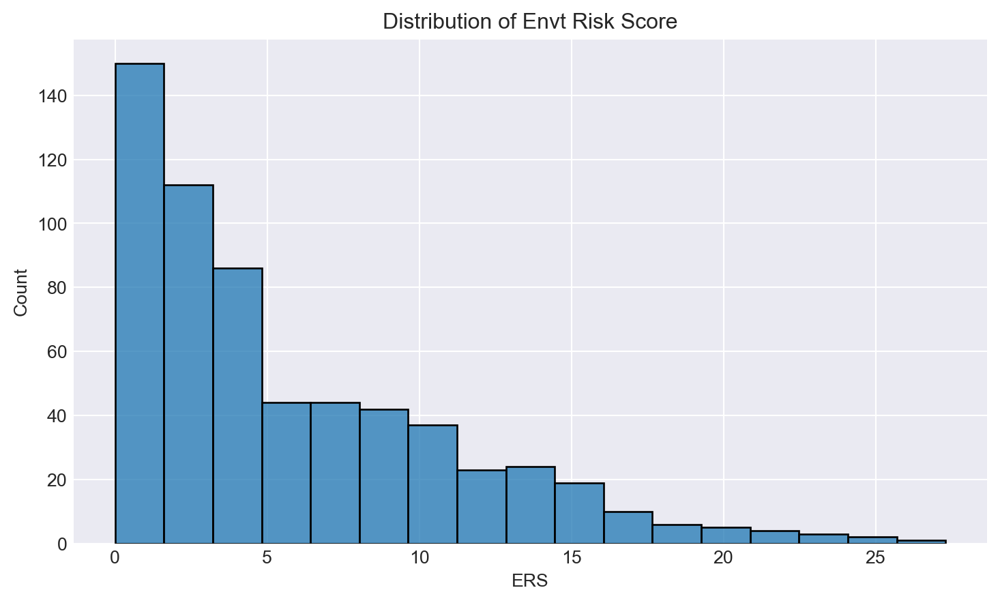
Comments: One can see here that the occurrence of high ERS is very low in the firms evaluated, low ERS values are much more common
sns.histplot(data =esg, x = 'SRS')
plt.title('Distribution of Social Risk Score')Text(0.5, 1.0, 'Distribution of Social Risk Score')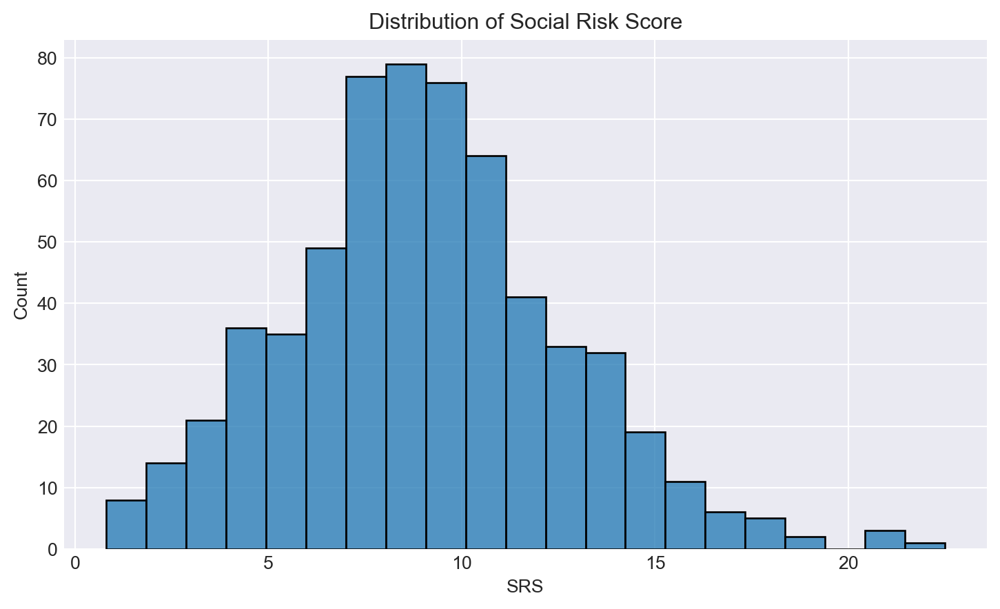
Comments: One can see here that the values of SRS are centered around 10, which makes the distribution of SRS values look similar to a normal curve
sns.histplot(data =esg, x = 'GRS')
plt.title('Distribution of Gov Risk Score')Text(0.5, 1.0, 'Distribution of Gov Risk Score')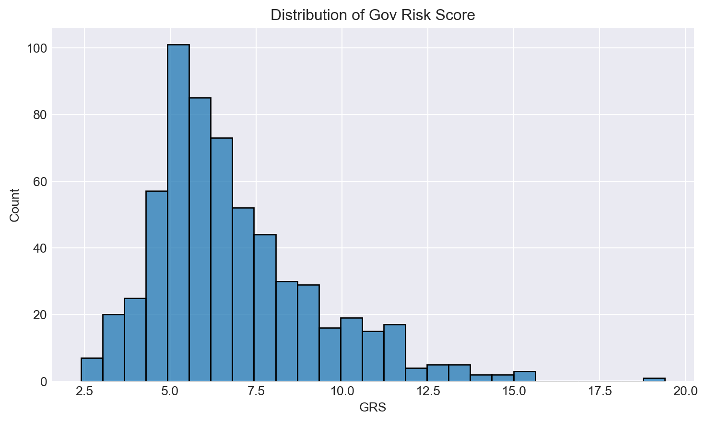
Comments: One can see here that the values of GRS are centered around 6, which makes its distribution also look similar to a normal curve
sns.histplot(data =esg, x = 'CL')
plt.title('Distribution of Controversy Level')Text(0.5, 1.0, 'Distribution of Controversy Level')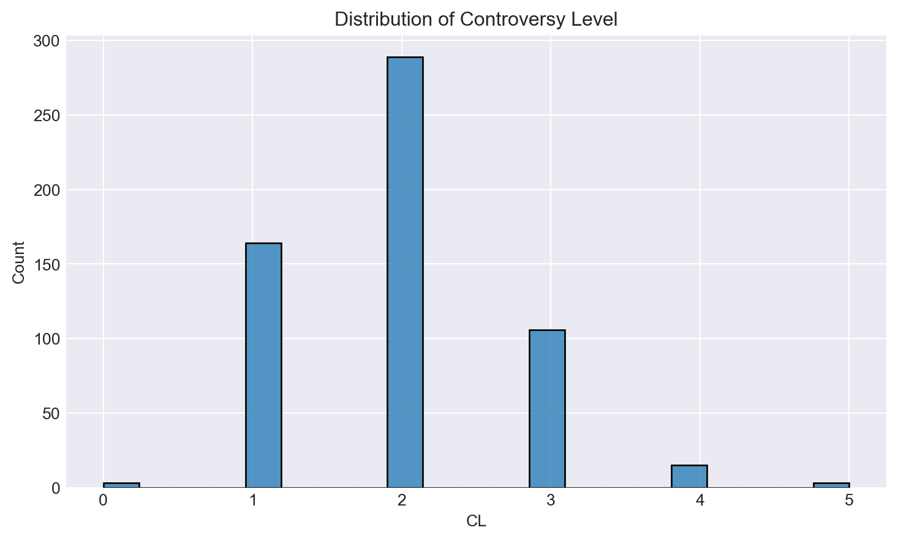
Comments: One can see here that CL values of 2 are most common, with values of 1 and 5 being almost nonexistant
sns.histplot(data =esg, x = 'Market Cap', bins = 50)
plt.title('Distribution of Market Capitalization')Text(0.5, 1.0, 'Distribution of Market Capitalization')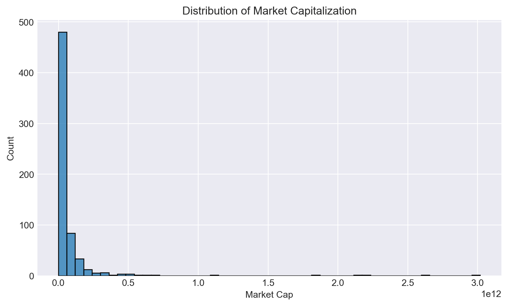
Comments: One can see here that market capitalization values are more frequently on the lower end (when compared with all of the firms in the data frame)
2.2 Income Statement Stats
Here I am selecting certain income data points since there are too many in the original data frame
inc = inc[['ticker','EBIT', 'Net Income', 'Total Revenue', 'Total Expenses']]2.2.1 General
inc.describe()| EBIT | Net Income | Total Revenue | Total Expenses | |
|---|---|---|---|---|
| count | 2.530000e+03 | 2.736000e+03 | 2.736000e+03 | 2.539000e+03 |
| mean | 9.715337e+08 | 7.368192e+08 | 6.590925e+09 | 5.686589e+09 |
| std | 2.524586e+09 | 2.196511e+09 | 1.331325e+10 | 1.214236e+10 |
| min | -1.109100e+10 | -1.191100e+10 | -8.031840e+08 | -1.029000e+09 |
| 25% | 1.754510e+08 | 1.086375e+08 | 1.277048e+09 | 1.049772e+09 |
| 50% | 3.884395e+08 | 2.658860e+08 | 2.679200e+09 | 2.141600e+09 |
| 75% | 9.485000e+08 | 7.060000e+08 | 5.580721e+09 | 4.450818e+09 |
| max | 4.037300e+10 | 3.391600e+10 | 1.699610e+11 | 1.567520e+11 |
2.2.2 Distribution Plots
sns.histplot(data =inc, x = 'EBIT', bins = 50)
plt.title('Distribution of EBIT')Text(0.5, 1.0, 'Distribution of EBIT')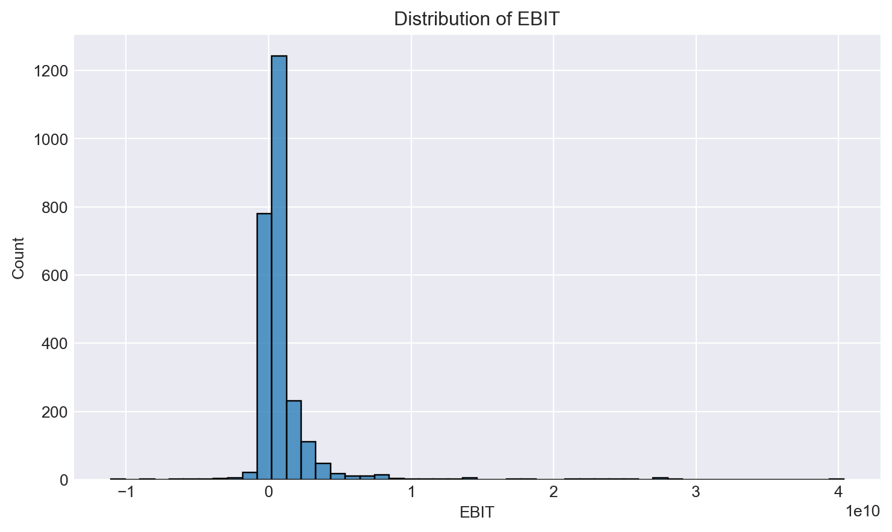
sns.histplot(data =inc, x = 'Net Income', bins = 50)
plt.title('Distribution of Net Income')Text(0.5, 1.0, 'Distribution of Net Income')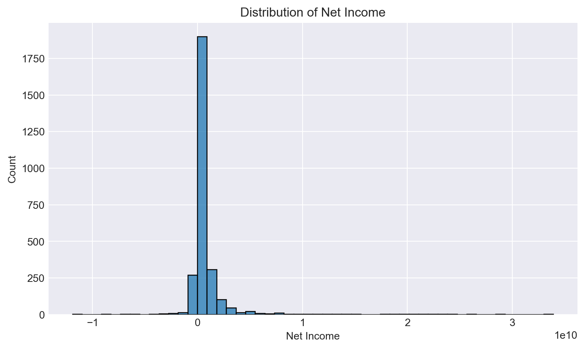
sns.histplot(data =inc, x = 'Total Revenue', bins = 50)
plt.title('Distribution of Total Revenue')Text(0.5, 1.0, 'Distribution of Total Revenue')sns.histplot(data =inc, x = 'Total Expenses', bins = 50)
plt.title('Distribution of Total Expenses')Text(0.5, 1.0, 'Distribution of Total Expenses')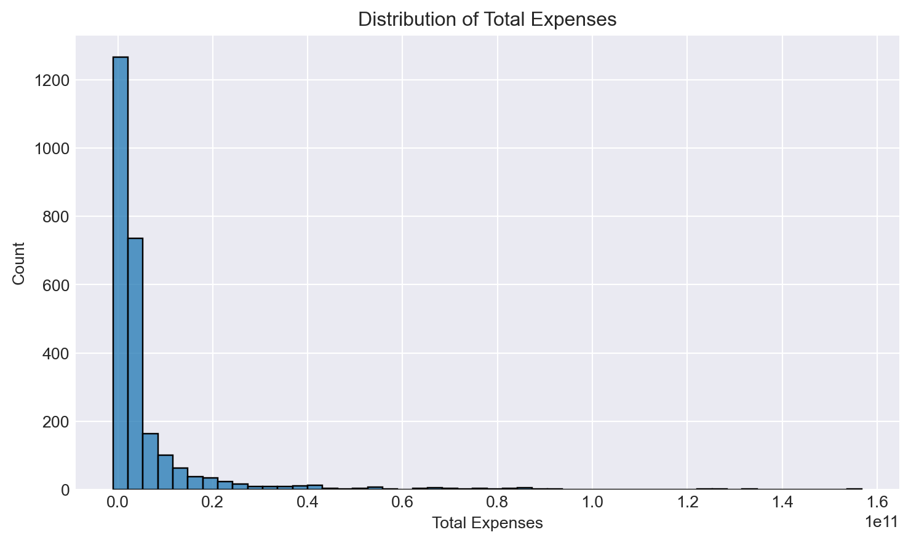
2.3 Balance Sheet Stats
Here I will also select a few data points to focus on
bal = bal[['ticker','Total Debt', 'Common Stock', 'Total Assets']]2.3.1 General
bal.describe()| Total Debt | Common Stock | Total Assets | |
|---|---|---|---|
| count | 2.705000e+03 | 2.714000e+03 | 2.738000e+03 |
| mean | 1.890101e+10 | 2.647317e+09 | 9.027200e+10 |
| std | 4.175898e+10 | 9.641319e+09 | 2.906681e+11 |
| min | 1.404000e+06 | 0.000000e+00 | 1.891360e+08 |
| 25% | 3.227232e+09 | 1.529250e+06 | 1.055588e+10 |
| 50% | 7.030000e+09 | 8.100000e+06 | 2.435150e+10 |
| 75% | 1.723300e+10 | 3.710000e+08 | 6.271950e+10 |
| max | 4.421400e+11 | 9.919300e+10 | 4.090727e+12 |
sns.histplot(data =bal, x = 'Total Debt', bins = 50)
plt.title('Distribution of Total Debt')Text(0.5, 1.0, 'Distribution of Total Debt')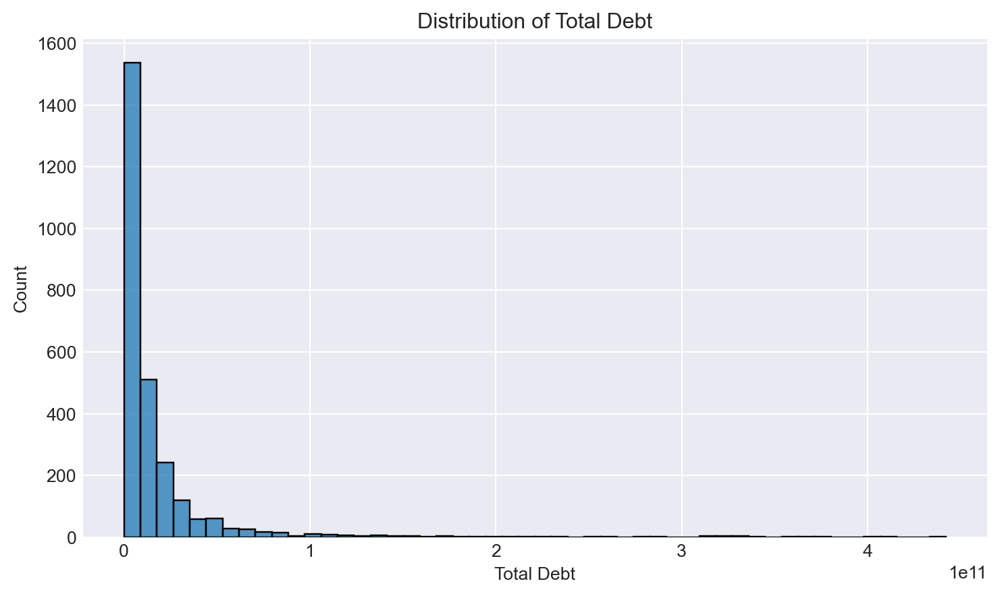
sns.histplot(data =bal, x = 'Common Stock', bins = 50)
plt.title('Distribution of Common Stock')Text(0.5, 1.0, 'Distribution of Common Stock')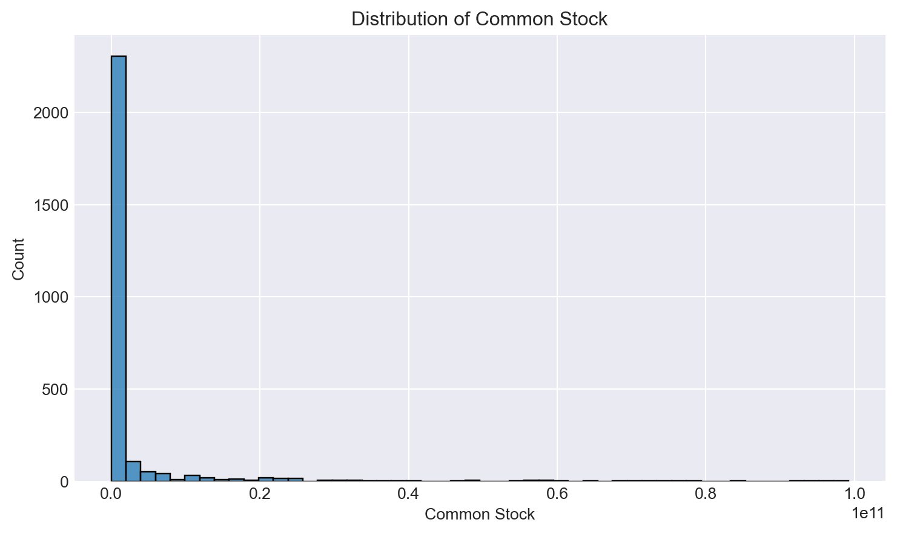
sns.histplot(data =bal, x = 'Total Assets', bins = 50)
plt.title('Distribution of Total Assets')Text(0.5, 1.0, 'Distribution of Total Assets')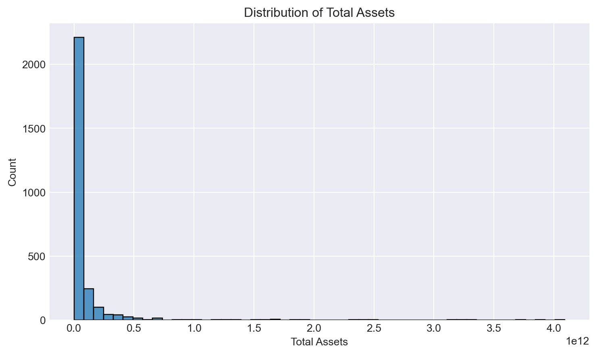
2.4 Historical Stats
hist = hist[['Close', 'Volume']]2.4.1 General
hist.describe()| Close | Volume | |
|---|---|---|
| count | 197796.000000 | 1.977960e+05 |
| mean | 149.424528 | 4.134482e+06 |
| std | 330.094224 | 9.289442e+06 |
| min | 0.980000 | 0.000000e+00 |
| 25% | 40.010676 | 8.323000e+05 |
| 50% | 82.121376 | 1.707600e+06 |
| 75% | 155.078556 | 3.854425e+06 |
| max | 8099.959961 | 3.160112e+08 |
2.4.2 Distribution Plots
sns.histplot(data =hist, x = 'Close', bins = 50)
plt.title('Distribution of Close')Text(0.5, 1.0, 'Distribution of Close')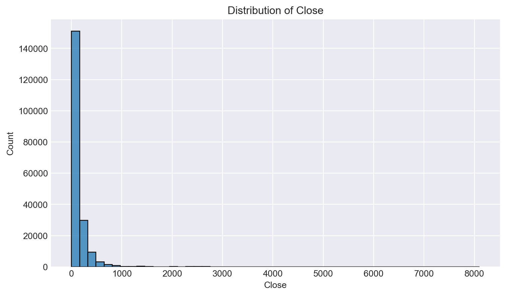
sns.histplot(data =hist, x = 'Volume', bins = 50)
plt.title('Distribution of Volume')Text(0.5, 1.0, 'Distribution of Volume')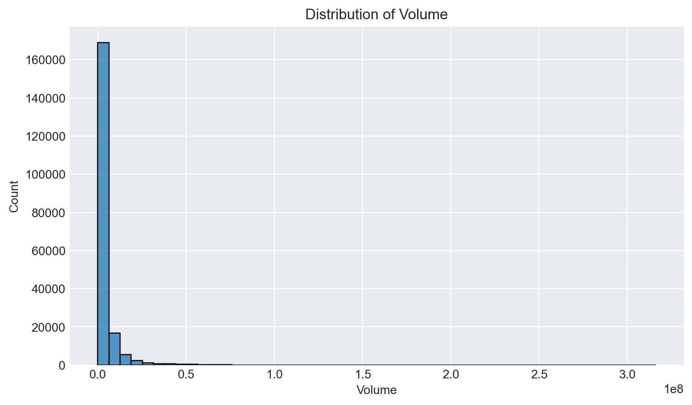
3 Questions to Explore
Does total ESG score vary by sector?
- This will be analyzed using the top three most frequent sectors
- Consumer Discretionary, Industrials, and Financial Services
- This will be analyzed using the top three most frequent sectors
Is there a relationship present between total expenses and total ESG score? How does it vary by sector?
Is there a relationship present between total assets and total ESG score?
~ In the next section, these questions will be explored and a conclusion will be made based on the data ~
3.1 Total ESG Score by Sector
First, the esg data frame has to be filtered for the chosen sectors to analyze
sectors = ['Consumer Discretionary', 'Industrials','Financial Services']
esg_ = esg[esg['Sector'].isin(sectors)]sns.FacetGrid(data = esg_, row = 'Sector').map(sns.histplot, 'tot_esg')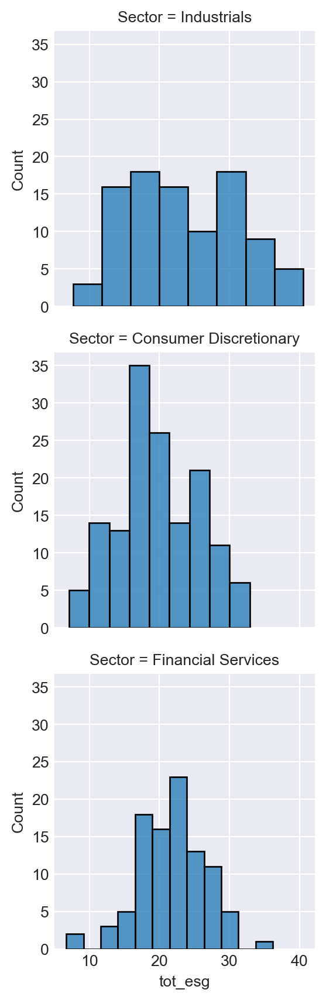
3.2 Relationship between Total Expenses and Total ESG Score
First, the data frames containint income statement data and esg data have to be joined together
inc_esg = esg_.merge(inc, on = 'ticker', how = 'left')sns.lmplot(data = inc_esg, x = 'tot_esg', y = 'Total Expenses')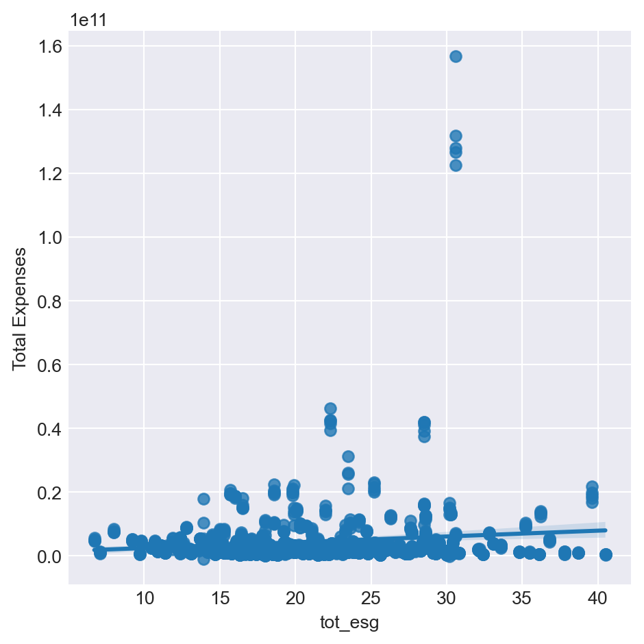
3.2.1 Comments
There seems to be a slight positive relationship present between Total ESG Score and Total Expenses. Meaning that as Total Expenses increase, so does Total ESG Score.
3.2.2 Relationship by Sector
sns.lmplot(data = inc_esg, x = 'tot_esg', y = 'Total Expenses', row = 'Sector')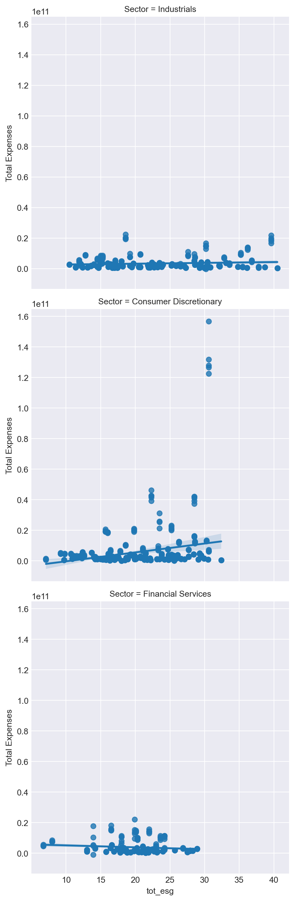
3.2.2.1 Comments
There seems to be very insignificant relationships in both industrials and financial services sectors. Howver, there is a relatively significant positive relationship in the consumer discretionary sector.
3.3 Relationship between Total Assets and Total ESG Score
First, the data frames have to again be joined. This time, the data frame containing balance sheet data and esg data are joined.
bal_esg = esg_.merge(bal, on = 'ticker', how = 'left')sns.lmplot(data = bal_esg, x = 'tot_esg', y = 'Total Assets')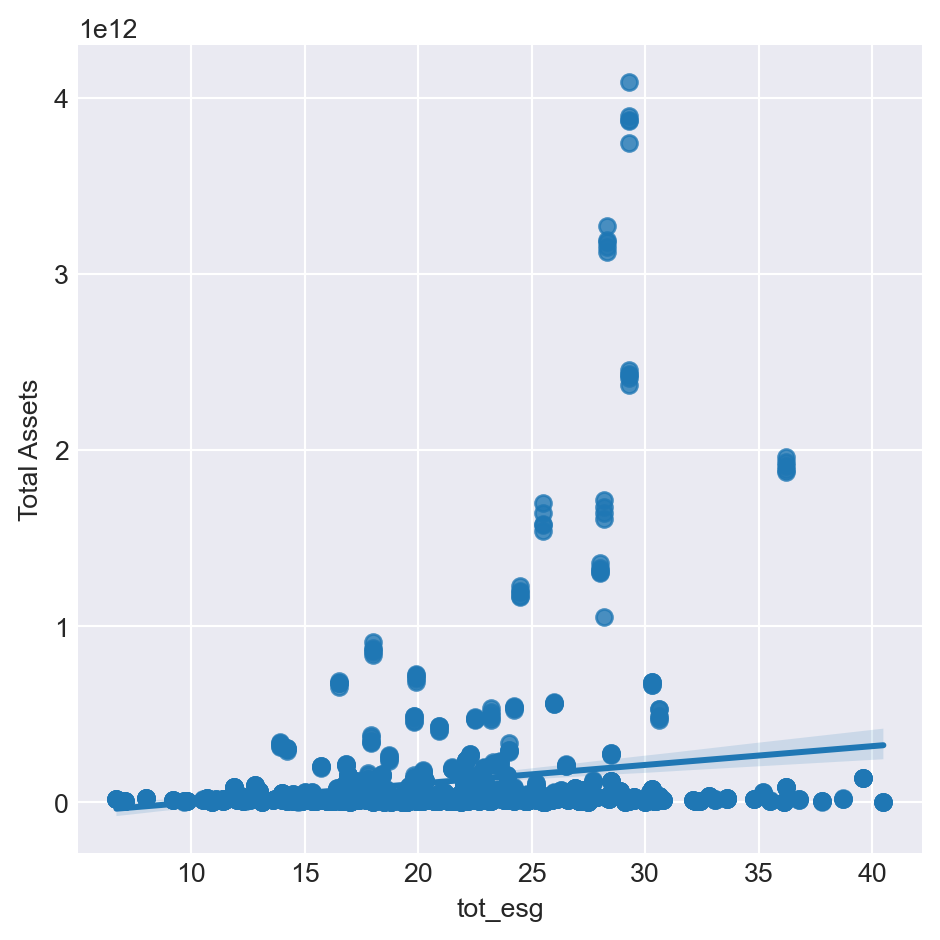
3.3.1 Comments
There seems to also be a slight positive relationship between Total Assets and Total ESG Score. One that is more significant that the relationship between Total Expenses and Total ESG Score.
3.3.2 Relationship by Sector
sns.lmplot(data = bal_esg, x = 'tot_esg', y = 'Total Assets', row = 'Sector')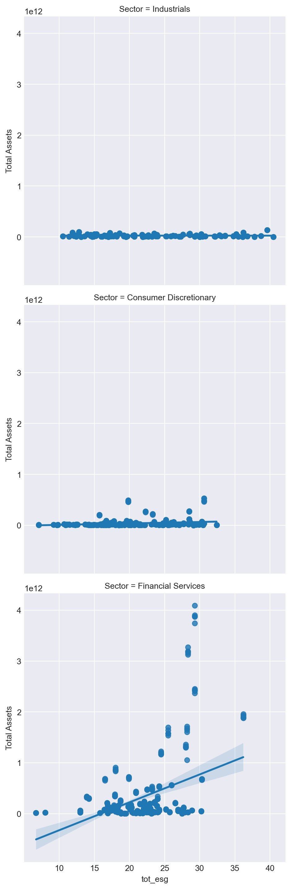
3.3.2.1 Comments
There seems to be no significant relationship in the Industrials or Consumer Discretionary sectors. However there is a significant positive relationship in the Financial Services Sector
4 Conclusion
After exploring the questions I chose to answer based on the data I came up with these conclusions:
- Total ESG Score does seem to vary by industry, this most likely will vary based on what the sector’s key business is.
- There does seem to be a slight positive relationship between Total Expenses and Total ESG Score. When looked at by sector, there seems to be differing relationships depending on the sector.
- There does seem to be a significant positive relationship between Total Assets and Total ESG Score. Again, it does seem to vary pretty drastically depending on which sector is being looked at.
5 Significance
This analysis is significant since it will deepen understanding of how esg scores can vary based on differing factors such as sector as evaluated in this project. This can be taken further to analyze how esg scores vary based on factors such as industry and the other sectors not evaluated here.
6 References
For the project I used ChatGPT to guide some of the web scraping, and I collaborated with Emily Peters to figure out the yfinance data collection section.
3.1.1 Comments
From these plots of total ESG score by sector,
one can see that industrials has a lower average total ESG score than both consumer discretionary and financial services, as well as a more varied total ESG score.